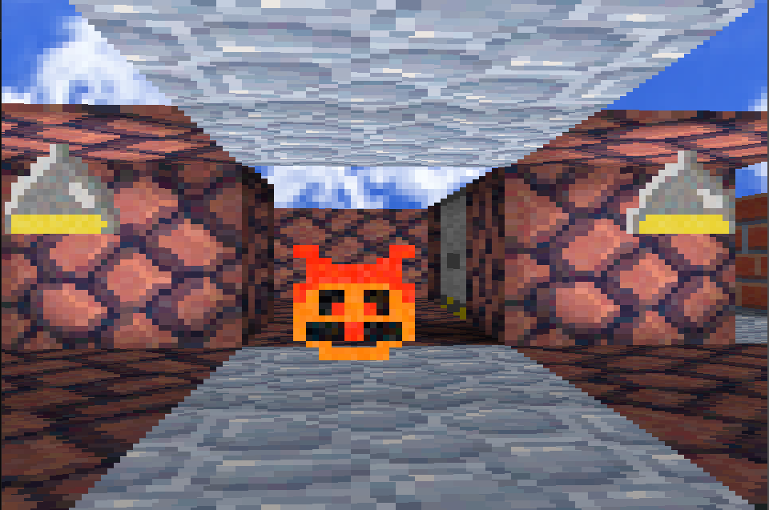

Operating Systems Development
OS Development built on a GNU Crosscompiler and deployed using QEMU

One more for good measure.
Some representative placeholder content for the third slide of this carousel.
Raycaster
Raycaster, written in C built using OpenGL, uses bitmap textures and GLFW for keyboard inputs
View DetailsCornell Box Made by CUDA Raytracer.
Cornell Box scene made by CUDA raytracer. 500 Samples per pixel.
OSDev in QEMU
Running using a hand written bootloader, running in protected mode in the bios (x86)

Raycaster enemy Checkmate.
Represented as a texture in the raycaster, follows the camera position along the ray path and if both positions intersect than a lose screen occurs.
